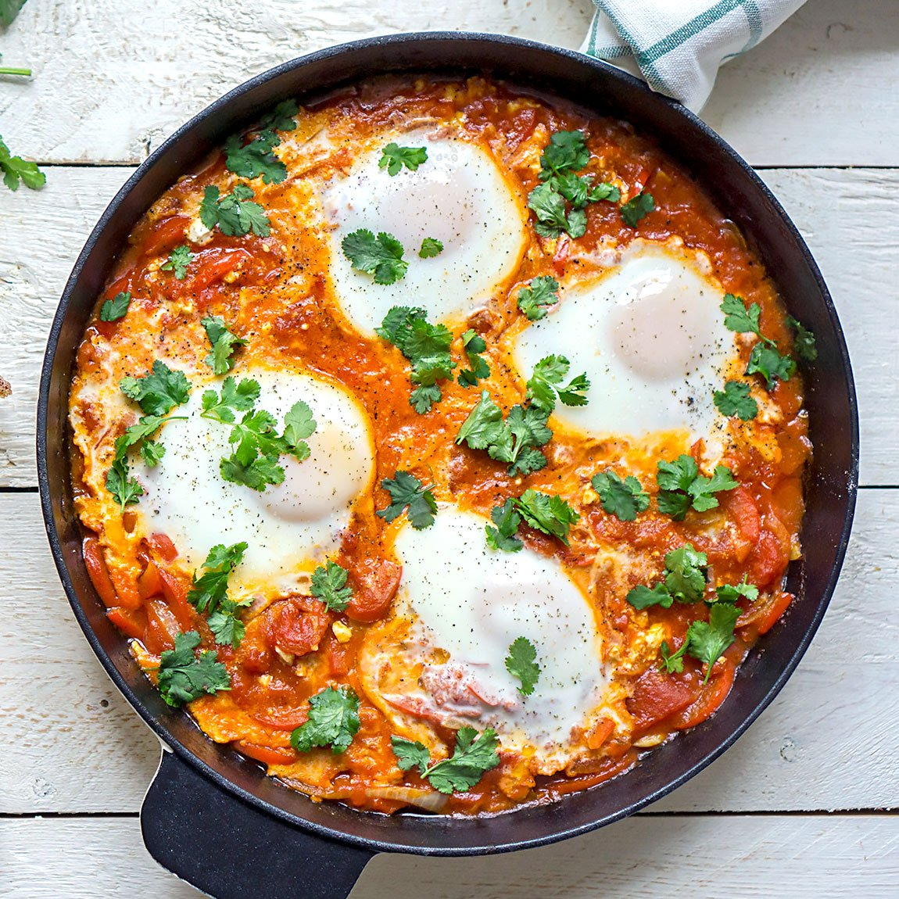

Shakshuka

Ingredients
- 2 tbsp olive oil
- 1 medium onion, finely chopped
- 1 bell pepper (red or green), chopped
- 2-3 cloves garlic, minced
- 1 tsp ground cumin
- 1 tsp ground paprika
- ½ tsp ground chili powder or red pepper flakes (adjust to your spice preference)
- 1 can (400g) crushed tomatoes or fresh ripe tomatoes, chopped
- Salt and pepper to taste
- 4-6 large eggs
- Fresh parsley or cilantro (for garnish)
- Optional: Crumbled feta cheese, olives, or avocado (for toppings)
- Bread (such as pita or crusty bread, for serving)